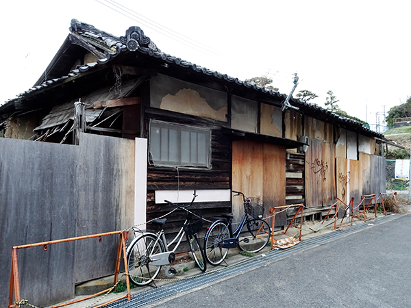
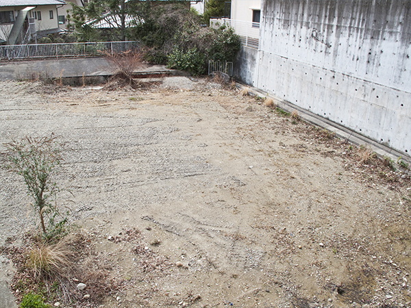
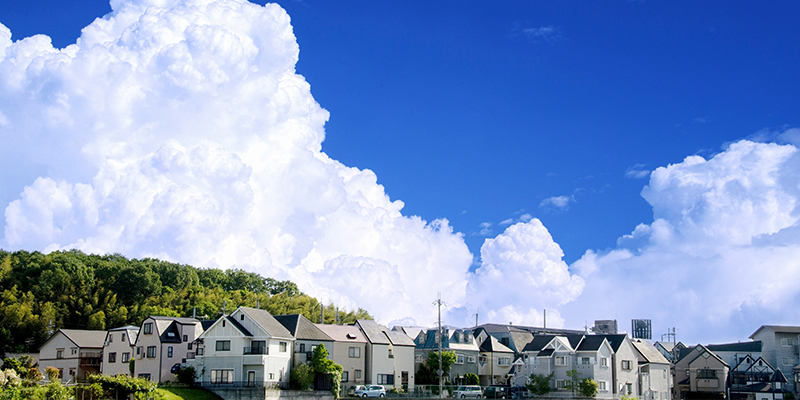

- TOP
- 相続・空き家対策
相続・空き家・土地をお持ちの方へ
相続した空き家や空き地の管理に困っている方はいらっしゃいませんか？ 空き家は空き地は、所有しているだけで税金がかかったり管理費用がかかったりするなど、無用の長物となってしまいます。また、適正に管理されていない空き家がご近所トラブルの原因につながることもあります。
こちらでは、今治で不動産売却を行っている「スクエア・プラス」が、空き家・空き地の問題や解決方法についてご説明します。当社ではお客様の状況やご要望に合わせた最適な活用法のご提案を行っていますので、空き家や空き地でお困りの方はお気軽にご相談ください。
「相続」「空き家」「空き地」でお悩みの方へ、こんなお悩みはありませんか？
相続した空き家や空き地、収益物件などについて、お悩みやお困りごとはありませんか？ 相続や空き家、空き地についてのお悩みを解決するのに、不動産を売却するという方法もあります。
- 相続した実家が空き家になっている
- 急に不動産を相続することになって悩んでいる
- 空き家の管理をどうしたらよいのか分からない
- 相続した実家が空き家のまま放置されている
- 空き家を相続したが管理できていない
- 親が介護施設に入居するので、実家が空き家になりそう
- 賃貸物件を相続したが管理のノウハウがない
- 相続税が払えるのかどうか不安
- 空き家に税金ばかりかかるので、手放してしまいたい など
相続した物件を放置していませんか？実はたくさんのデメリットがあるのです！
相続によって不動産を取得した場合、一般的には得した気になりますよね。しかし、使い道のない空き家や空き地を相続するのは、決して得とはいえないのです。さらに、空き家や空き地を放置しておくことは利益どころか、大きなデメリットにつながります。

| デメリット | 対策 |
|---|---|
| たとえ誰も住んでいない家であっても固定資産税を払い続けなければいけません。 | 不動産を売却することによって固定資産税を払わなくて済む。 |
| 適正に管理されていない不動産の資産価値は次第に目減りしていきます。 | 資産価値が維持されているうちに売却する。あるいは、資産価値が下がらないよう適正に管理する。 |
| 特定空き家に指定されると過料の対象になったり、土地にかかる固定資産税の優遇措置が適用されなくなったりします。 | 行政執行が行われると、すべて自費負担となってしまう。そうなる前に自ら取り壊して更地にすることで、取り壊し費用の補助を受けることができる。 |
相続した不動産を売却する際の税金とは？
相続した不動産を売却することを考えた場合、大きな費用がかかるのではないかという心配はありませんか？ あらかじめどれくらいのお金がかかりそうか、費用を見積もっておくと安心でしょう。
相続税
亡くなった方から相続人へ不動産が相続されると、「相続税」が発生します。相続した財産から基礎控除を引き、残った金額に対して相続税がかかります。基礎控除額の計算式は次のとおりです。
相続税の基礎控除額＝3,000万円＋法定相続人×600万円
つまり法定相続人が配偶者と子ども2人の場合は、3,000万円＋3×600万円＝4,800万円が基礎控除額となります。
登録免許税
相続不動産を売却する際には、不動産の名義変更を行わなければいけません。この名義変更の際に発生するのが「登録免許税」です。登録免許税は、毎年市町村が定めている「固定資産税評価額」をもとに決められています。
本則税率では固定資産税評価額の2%が登録免許税ですが、令和3（2021）年3月31日までは軽減税率が適用されており、固定資産税評価額の1.5%です。
空き家問題もお気軽にご相談ください！
都市部、郡部にかかわらず、空き家問題は全国規模の社会問題となっています。総務省統計局による平成30年の調査では、全国の空き家率は13.6%にのぼり、今も増加の一途をたどっています。
親と別の家で暮らしているという方には、いずれ空き家の相続が発生することでしょう。つまり空き家問題はお客様ご自身の問題でもあるのです。親の家をどうしたらよいのか、何か活用方法はあるのかなど、親が元気なうちから考えておくことをおすすめします。
空き家・土地を有効に使う方法とは？
維持管理費用や税金などがかかってしまう空き家や空き地。しかも何も対処しなければ資産価値は下がっていってしまいます。こうした空き家や空き地を有効に活用する方法について、「スクエア・プラス」がアドバイスします。

| 仲介売却 | できるだけ高く売るためには仲介売却がおすすめです。多少時間がかかりますが、ご希望に近い価格での売却を期待できます。 |
|---|---|
| 不動産買取 | すぐに不動産を売却したい方は不動産買取がおすすめです。仲介売却よりは安くなりますが、すぐに現金化できます。 |
| 不動産管理 | 具体的な活用法が決まっていないけれど、資産価値を目減りさせたくない場合にも適正な管理が必要です。「スクエア・プラス」では、定期的な訪問や清掃、郵便物の対応など空き家や空き地の管理も承ります。 |
| 不動産賃貸 | 賃貸物件として貸し出すことで、毎月の家賃収入が入ります。使い道のない空き家が収益物件へと変わるのです。 |
| 駐車場など | 空き地であれば駐車場や資材置き場などに活用することもできます。 |
今治で不動産売却を行っている「スクエア・プラス」はお客様のご要望に沿った最適な活用方法のご提案が可能です。経験豊富な代表の知識やノウハウを活用し、総合的なご提案を行っていますので、空き地や土地の有効利用についてはお気軽にご相談ください。
PICK UP!県外・遠方の空き家や土地も「スクエア・プラス」にお任せください！
県外や遠方にある空き家をそのまま放置していませんか？ 遠方のため管理もできず放置しておくことは、何も生み出さないだけではなく、費用がかかったり、損になったりすることもあるのです。
日本では不動産信仰や持ち家信仰が強いため、「先祖代々の土地だから……」「せっかく親から相続したのだから……」など、相続した不動産を簡単に手放せない方が多いようです。しかし管理もせず放置しておくことは、様々なリスクが発生します。
住人のいない不動産であっても固定資産税はかかります。適正に管理されずボロボロになって「特定空き家」と指定されてしまうと固定資産税の優遇措置が受けられず、税額がはね上がってしまうこともあるのです。
相続物件が近くにあれば、頻繁に行き来して管理することも可能でしょう。しかし、遠方の場合はそうはいきません。管理の行き届かない遠方の不動産の処分にお困りの方は、一度「スクエア・プラス」へご相談ください。

今治での不動産売却なら、スクエア・プラスにお任せください。
経験豊富な代表の知識やノウハウを活用し、売主様に最適なご提案を行います。